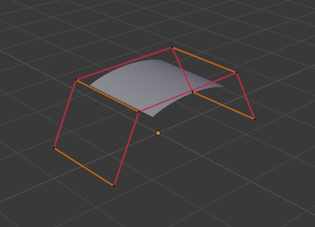

Control Points¶
Extrude Curve and Move¶
Reference
| Mode: | Edit Mode |
|---|---|
| Menu: | |
| Hotkey: | E |
Unlike meshes or curves, you cannot generally directly add new control points to a surface, as you can only extend a surface by adding a whole U or V row at once. The only exception is when working on a NURBS surface curve, i.e. a surface with only one control point on each U or V row. In this special case, all works exactly as with curves.
Most of the time, only extrusion is available. As usual, once the tool is activated the extrusion happens immediately and you are placed into select mode, ready to drag the new extruded surface to its destination.
There are two things very important to understand:
- Surfaces are 2D objects. So you cannot extrude anything inside a surface (e.g. “inner” row); it would not make any sense!
- The control “grid” must remain “squarish”, which means that you can only extrude a whole row, not parts of rows here and there…
To summarize, the Extrude tool will only work, when one and only one whole border row is selected, otherwise nothing happens.
Note
As for curves, you cannot create a new surface in your object out of nowhere. However, unlike for curves, there is no “cut” option allowing you to separate a surface into several parts, so you only can create a new surface by Duplicating an existing one, or adding a new one with the Add menu.
Examples¶
Images Fig. Selecting control point. to Fig. Extruding. show a typical extrusion along the side of a surface.
In Fig. Selecting control point. and Select Control Point Row., a border row of control points were highlighted by selecting a single control point, and then using Select Control Point Row to select the rest of the control points.

Selecting control point. |

Select Control Point Row. |
The edge is then extruded as shown in Fig. Extruding.. Notice how the mesh has bunched up next to the highlighted edge. That is because the new extruded surface section is bunched up there as well.

Extruding.
By moving the new section away from the area, the surface begins to “unbunch”.
You can continue this process of extruding or adding new surface sections until you have reached the final shape for your model.
Make Segment¶
Reference
| Mode: | Edit Mode |
|---|---|
| Menu: | |
| Hotkey: | F |
Just like curves, merging two surfaces requires that a single edge, a border row of control points, from two separate surfaces is selected. This means that the surfaces must be part of the same object. For example, you cannot join two surfaces while in Object Mode – but you can of course, as with any objects of the same type, join two or more Surface objects – they just will not be “linked” or merged in a single one.
This tool is equivalent to creating edges or faces for meshes (hence its shortcut).
The selection must contain only border rows of the same resolution
(with the same number of control points),
else Blender will try to do its best to guess what to merge with what,
or the merge will fail (either silently, or stating that Resolution does not match
if rows with different number of points are selected, or that there is Too few selections to merge
if you only selected points in one surface…). To select control points of different surfaces,
in the same object, you must use either box select or circle select; Ctrl-LMB will not work.
So to avoid problems, you should always only select border rows with the same number of points… Note that you can join a border U row of one surface with a border V row of another one, Blender will automatically “invert” the axis of one surface for them to match correctly.
NURBS surface curves are often used to create objects like hulls, as they define cross sections all along the object, and you just have to “skin” them as described above to get a nice, smooth and harmonious shape.
Examples¶
Fig. Joining ready. is an example of two NURBS surface curves, not NURBS curves, in Edit Mode, ready to be joined. Fig. Joining complete. is the result of joining the two curves.

Joining ready. |

Joining complete. |
Smooth¶
Reference
| Mode: | Edit Mode |
|---|---|
| Menu: |
Iteratively smooths the selected control points by reducing the distance between neighboring control points.
Hooks¶
Reference
| Mode: | Edit Mode |
|---|---|
| Menu: | |
| Hotkey: | Ctrl-H |
Hooks can be added to control one or more points with other objects.
Make Vertex Parent¶
Reference
| Mode: | Edit Mode |
|---|---|
| Menu: | |
| Hotkey: | Ctrl-P |
You can make other selected objects children of one or three control points, as with mesh objects.
To select a mesh (that is in view) while editing a surface, Ctrl-P click on it. Select either one or three control points, then Ctrl-LMB the object and use Ctrl-P to make a vertex parent. Selecting three control points will make the child follow the median point between the three vertices. An alternative would be to use a Child of Constraint. See also the Curve Modifier.